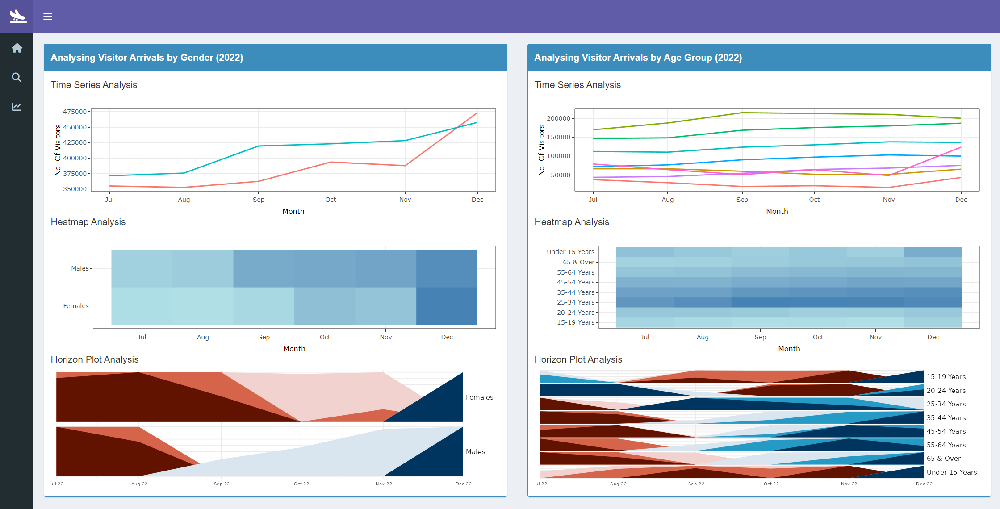

User Guide
Summary
This tab can be used to analyze the key insights for the Visitor Arrival Analytics R Shiny application.
xx
xx
Explore
There are three sub-sections for the explore section. These sections contain analysis on the Tourism Markets, the Demographics of Visitors as well the Length of Stay of these visitors.
Tourism Markets
This tab can be used to analyze the country-level analysis of Visitor Arrivals to Singapore.

xx
xx
Demographics
This tab can be used to analyze the age and gender breakdown of the visitors that arrive in Singapore.

xx
Length of Stay
This tab can be used to analyze the length of stay of the visitors that arrive in Singapore.
xx
Forecast
This tab can be used to analyze the forecasts that can be carried out on a regional level. This tab contains 8 forecasting models, their accuracy of forecasts, results of the forecast and refitted forecasts, as well as the residuals of these forecasts.

xx

xx

xx
xx

xx
xx